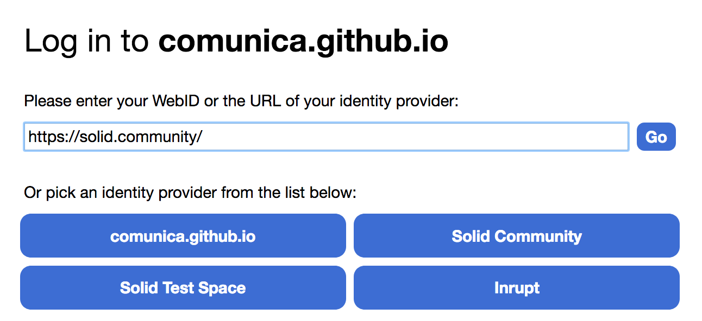
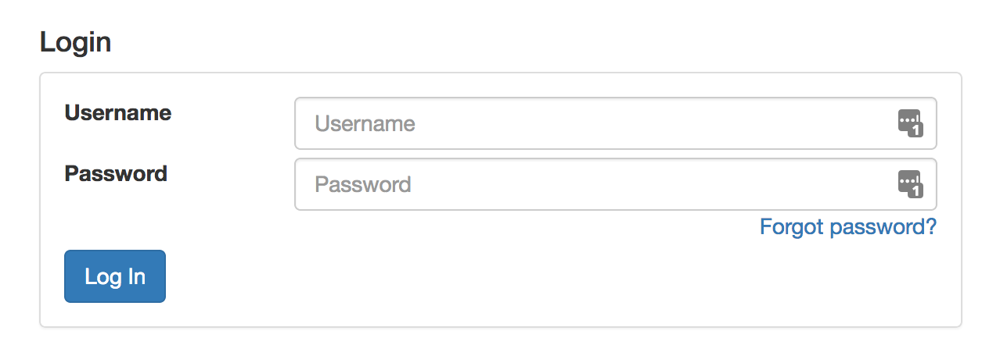
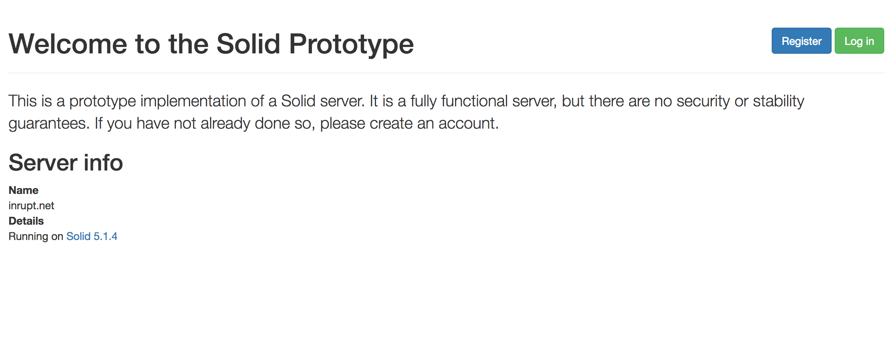

<!DOCTYPE html>
<html lang="en">
  <head prefix="foaf: http://xmlns.com/foaf/0.1/">
    <title>A Technical View on the Solid Ecosystem</title>

    <meta charset="utf-8" />
    <meta name="viewport" content="width=device-width, initial-scale=1" />
    <link rel="stylesheet" href="shower/themes/material/styles/styles.css">
    <link rel="stylesheet" href="styles/rt-custom.css" />
    <link href='https://fonts.googleapis.com/css?family=Open+Sans' rel='stylesheet' type='text/css' />
    <link href='https://fonts.googleapis.com/css?family=Droid+Sans' rel='stylesheet' type='text/css' />
    
    <link rel="foaf:maker" href="https://www.rubensworks.net/#me" />

    <style>
      .shower {
        --slide-ratio: calc(16 / 9);
      }
    </style>
  </head>

  <body class="shower list" prefix="rdf: http://www.w3.org/1999/02/22-rdf-syntax-ns# foaf: http://xmlns.com/foaf/0.1/ owl: http://www.w3.org/2002/07/owl# xsd: http://www.w3.org/2001/XMLSchema# org: http://www.w3.org/ns/org# schema: http://schema.org/ cite: http://purl.org/spar/cito/" typeof="schema:PresentationDigitalDocument">
    <header class="caption">
      <div class="title">
        <h1 property="schema:name">A Technical View on the Solid Ecosystem</h1>
      </div>
      <div class="captiondata">
        <p class="author" rel="schema:author"><a href="https://www.rubensworks.net/#me">Ruben Taelman</a></p>
        <p class="venue">
          <a href="http://www.oslcfest.org/">OSLC FEST</a>, <span rel="schema:datePublished">20 May 2020</span></a>
        </p>
      </div>
    </header>

    <section id="title" class="slide title" inlist="" rel="schema:hasPart" resource="#title">
      <h2 property="schema:name">A Technical View on the Solid Ecosystem</h2>
      <ul class="author inline">
          <li class="current"><a href="https://www.rubensworks.net/">Ruben Taelman</a></li>
      </ul>
      <p class="affiliation"><a href="http://idlab.technology/">Ghent University – imec – IDLab, Belgium</a></p>
    </section>

    <section id="start" class="slide" inlist="" rel="schema:hasPart" resource="#start">
        <h2 property="schema:name" class="big">Solid: a decentralized Web ecosystem</h2>
        
        <ul style="margin-top: 125px">
            <li><h3>Decouples <em>data</em> from <em>application</em></h3></li>
            <li><h3>Personal data pods &rarr; data ownership</h3></li>
            <li><h3>Collection of open Web standards</h3></li>
        </ul>
    </section>
    
    <section id="index" class="slide index" inlist="" rel="schema:hasPart" resource="#index">
      <ul>
        <li><a href="#index-standards">Standards</a></li>
        <li><a href="#index-tools">Tools</a></li>
      </ul>
    </section>
    
    <section id="index-standards" class="slide index" inlist="" rel="schema:hasPart" resource="#index-standards">
      <ul>
        <li class="current"><a href="#index-standards">Standards</a></li>
        <li><a href="#index-tools">Tools</a></li>
      </ul>
    </section>
    
    <section id="standard-overview" class="slide" inlist="" rel="schema:hasPart" resource="#standards-overview">
        <h2 property="schema:name">Solid combines several Web standards</h2>
        <ul>
            <li><h3>Linked Data Platform</h3><span class="indent">Reading and Writing over HTTP</span></li>
            <li><h3>WebID-OIDC</h3><span class="indent">Authentication</span></li>
            <li><h3>Web Access Control</h3><span class="indent">Authorization</span></li>
            <li><h3>Linked Data Notifications</h3><span class="indent">Sending and receiving notifications</span></li>
        </ul>
    </section>
    
    <section id="standard-ldp" class="slide" inlist="" rel="schema:hasPart" resource="#standards-ldp">
        <h2 property="schema:name">Reading and writing over HTTP</h2>
        <h3><em><a href="https://www.w3.org/TR/ldp/">Linked Data Platform (LDP)</a></em></h3>
        <ul>
            <li>
                <h3>Pods can store RDF and non-RDF files</h3>
                <span class="indent">JSON-LD, Turtle, HTML+RDFa, ...</span>
                <br />
                <span class="indent">Binary data, raw text, ...</span>
            </li>
            <li>
                <h3>Read and write via HTTP methods and content-negotiation</h3>
                <span class="indent">GET, POST, PUT, PATCH, DELETE</span>
                <br />
                <span class="indent">PATCH: <a href="https://www.w3.org/TR/sparql11-update/">SPARQL update</a> queries</span>
            </li>
            <li>
                <h3>Directories represented by LDP Basic Containers</h3>
                <span class="indent">Enables Linked-Data-based directory content discovery</span>
            </li>
        </ul>
    </section>
    
    <section id="standard-ldp-client" class="slide" inlist="" rel="schema:hasPart" resource="#standards-ldp-client">
        <h2 property="schema:name" class="big">Solid server API is relatively simple</h2>
        <h3>&rarr; Client-side Solid apps must be smart</h3>
        <ul>
            <li>
                <h3>Hypermedia-based apps</h3>
                <span class="indent">Discover files in containers, links to relevant files, ...</span>
                <br />
                <span class="indent">Reusable libraries exist: SPARQL, GraphQL, ...</span>
            </li>
            <!--<li>
                <h3>Queries as abstraction layer</h3>
                <span class="indent">Allows apps to be query-driven</span>
                <br />
                <span class="indent">Reusable client-side query engines handle complexities</span>
                <br />
                <span class="indent"><em>SPARQL, GraphQL, LDflex, ...</em></span>
            </li>-->
        </ul>
    </section>
    
    <section id="standard-webidoidc" class="slide" inlist="" rel="schema:hasPart" resource="#standards-webidoidc">
        <h2 property="schema:name">Users are in control of their own identity</h2>
        <h3><em><a href="https://github.com/solid/webid-oidc-spec">WebID-OpenID Connect (WebID-OIDC)</a></em></h3>
        <ul>
            <li>
                <h3>WebID: a dereferenceable RDF Web resource</h3>
                <span class="indent"><a href="https://rubensworks.solid.community/profile/card#me">https://rubensworks.solid.community/profile/card#me</a></span>
                <br />
                <span class="indent">Profile contains basic information: name, image, ...</span>
            </li>
            <li>
                <h3>Identity provider authenticates WebID</h3>
                <span class="indent">WebID points to an identity provider server (<em>!= pod server</em>)</span>
                <br />
                <span class="indent">&rarr; Different identity providers exist</span>
            </li>
        </ul>
    </section>
    
    <section id="standard-webidoidc-example-1" class="slide" inlist="" rel="schema:hasPart" resource="#standards-webidoidc-example-1">
        <h2 property="schema:name">Logging in to a Solid app</h2>
        <h3>Select an identity provider</h3>
        <center></center>
    </section>
    
    <section id="standard-webidoidc-example-2" class="slide" inlist="" rel="schema:hasPart" resource="#standards-webidoidc-example-1">
        <h2 property="schema:name">Logging in to a Solid app</h2>
        <h3>Logging in at the selected identity provider</h3>
        <center></center>
    </section>
    
    <section id="standard-wac" class="slide" inlist="" rel="schema:hasPart" resource="#standards-wac">
        <h2 property="schema:name">Fine-grained access control to data</h2>
        <h3><em><a href="https://github.com/solid/web-access-control-spec">Web Access Control (WAC)</a></em></h3>
        <ul>
            <li>
                <h3>Each file has a corresponding <em>Access Control List</em> (ACL) file</h3>
                <span class="indent">Describes <em>who (WebID) has access</em> to the resource, and the <em>modes of access</em>.</span>
            </li>
            <li>
                <h3>Different modes of access</h3>
                <span class="indent">Read, write, append, control</span>
            </li>
            <!--<li>
                <h3>ACLs can inherit from ACLs in parent directories</h3>
                <span class="indent">Makes it easier to defined scoped access</span>
            </li>-->
        </ul>
    </section>
    
    <section id="standard-wac-example" class="slide" inlist="" rel="schema:hasPart" resource="#standard-wac-example">
        <h2 property="schema:name">WAC: https://alice.inrupt.net/file1.acl</h2>
        <pre>
@prefix  acl:  <http://www.w3.org/ns/auth/acl#>  .

&lt;#authorization1&gt;
    a             acl:Authorization;
    acl:agent     &lt;https://alice.inrupt.net/profile/card#me&gt;;
    acl:accessTo  &lt;https://alice.inrupt.net/file1&gt;;
    acl:mode      acl:Read, 
                  acl:Write, 
                  acl:Control.
        </pre>
        <ul>
            <li><code>file1.acl</code> defines access for <code>file1</code>.</li>
            <li>Alice has Read, Write and Control rights.</li>
        </ul>
    </section>
    
    <section id="standard-ldn" class="slide" inlist="" rel="schema:hasPart" resource="#standards-ldn">
        <h2 property="schema:name">Sending notifications across pods</h2>
        <h3><em><a href="https://www.w3.org/TR/ldn/">Linked Data Notifications (LDN)</a></em></h3>
        <ul>
            <li>
                <h3><em>Senders</em> can send <em>notifications</em> to the <em>inbox</em> of <em>consumers</em></h3>
                <span class="indent">For apps that require interaction between different users</span>
            </li>
        </ul>
        <center></center>
    </section>
    
    <section id="standard-other" class="slide" inlist="" rel="schema:hasPart" resource="#standards-other">
        <h2 property="schema:name">Other standards</h2>
        <ul>
            <li>
                <h3><a href="https://github.com/solid/solid-spec/blob/master/api-websockets.md">WebSockets</a></h3>
                <span class="indent">API for real-time resource notifications</span>
            </li>
            <li>
                <h3><a href="https://github.com/solid/solid-spec/blob/master/authn-webid-tls.md">WebID-TLS</a></h3>
                <span class="indent">Authentication using TLS certificates</span>
            </li>
        </ul>
    </section>
    
    <section id="index-tools" class="slide index" inlist="" rel="schema:hasPart" resource="#index-tools">
      <ul>
        <li><a href="#index-standards">Standards</a></li>
        <li class="current"><a href="#index-tools">Tools</a></li>
      </ul>
    </section>
    
    <section id="tools-overview" class="slide" inlist="" rel="schema:hasPart" resource="#tools-overview">
        <h2 property="schema:name">Tools and services for Solid</h2>
        <ul>
            <li>
                <h3><a href="https://github.com/solid/node-solid-server">Node Solid Server</a></h3>
                <span class="indent">File-system-based Solid server in JavaScript</span>
            </li>
            <li>
                <h3><a href="https://github.com/solid/solid-auth-client">Solid Auth Client</a></h3>
                <span class="indent">Library to perform authenticated requests to Solid pods</span>
            </li>
            <li>
                <h3><a href="https://github.com/inrupt/solid-react-sdk">Solid React SDK</a></h3>
                <span class="indent">Components for developing Solid apps in React</span>
            </li>
            <li>
                <h3><a href="https://inrupt.net/">inrupt.net</a> Node Solid Server instance</h3>
                <span class="indent">A free pod service</span>
            </li>
        </ul>
    </section>
    
    <section id="tools-nss" class="slide" inlist="" rel="schema:hasPart" resource="#tools-nss">
        <h2 property="schema:name">Node Solid Server hosts file-based pods</h2>
        <h3>
            <em>Open source: <a href="https://github.com/solid/node-solid-server">https://github.com/solid/node-solid-server</a><br /></em>
        </h3>
        <ul>
            <li>
                <h3>Reference implementation of Solid</h3>
                <span class="indent">Implements LDP, WAC, WebID-OIDC, ... specifications</span>
            </li>
            <li>
                <h3>Single-user or many-user mode</h3>
                <span class="indent">Host a <em>personal</em> data pod, or service for hosting <em>many</em> data pods</span>
            </li>
            <li>
                <h3>Optionally hosts WebIDs</h3>
                <span class="indent">For people without a WebID, a new WebID can be created next to your pod</span>
            </li>
        </ul>
    </section>
    
    <section id="tools-auth" class="slide" inlist="" rel="schema:hasPart" resource="#tools-auth">
        <h2 property="schema:name">Auth Client for authenticated requests</h2>
        <h3><em>Open source: <a href="https://github.com/solid/solid-auth-client">https://github.com/solid/solid-auth-client</a></em></h3>
        <ul>
            <li>
                <h3>JavaScript library for logging into Solid apps</h3>
                <span class="indent">Implements the WebID-OIDC protocol for clients</span>
            </li>
            <li>
                <h3><code>solid.auth.fetch</code> enables authenticated HTTP(S) requests</h3>
                <span class="indent"><code>solid.auth.fetch</code> has the same interface as <code>fetch</code></span>
            </li>
            <li>
                <pre>if (!await solid.auth.currentSession())
  await solid.auth.popupLogin({ popupUri });
await fetch('https://timbl.com/timbl/Public/friends.ttl');</pre>
            </li>
        </ul>
    </section>
    
    <section id="tools-react" class="slide" inlist="" rel="schema:hasPart" resource="#tools-react">
        <h2 property="schema:name">Solid React SDK for developing Solid apps</h2>
        <h3><em>SDK overview: <a href="https://github.com/inrupt/solid-react-sdk">https://github.com/inrupt/solid-react-sdk</a></em></h3>
        <ul>
            <li>
                <h3><a href="https://github.com/inrupt/generator-solid-react">Solid React Application Generator</a></h3>
                <span class="indent">Generates a basic Solid app with basic files and dependencies</span>
            </li>
            <li>
                <h3><a href="https://github.com/inrupt/solid-react-components">Solid React Components Library</a></h3>
                <span class="indent">Reusable React components for Solid applications</span>
                <br />
                <span class="indent"><em>login forms, private routes, uploaders, ShEx forms</em></span>
                <br />
                <span class="indent"><a href="https://github.com/rubensworks/solid-react-graphql-ld.js">GraphQL-based components</a></span>
            </li>
            <li>
                <h3>Under active development</h3>
                <span class="indent">WIP: I18N, user preferences, Linked Data Notifications, data discovery, ...</span>
            </li>
        </ul>
    </section>
    
    <section id="tools-pods" class="slide" inlist="" rel="schema:hasPart" resource="#tools-pods">
        <h2 property="schema:name"><a href="https://inrupt.net/">inrupt.net</a> for easily creating a Solid pod</h2>
        <ul>
            <li>
                <h3>Public Node Solid Server instance</h3>
                <span class="indent">Everyone can register for a pod and WebID</span>
            </li>
            <li>
                <h3>Storage quota of 25MB</h3>
                <span class="indent">To avoid abuse of this public service</span>
            </li>
        </ul>
        <center><a href="https://inrupt.net/"></a></center>
    </section>
    
    <section id="index-final" class="slide index" inlist="" rel="schema:hasPart" resource="#index-final">
      <ul>
        <li><a href="#index-standards">Standards</a></li>
        <li><a href="#index-tools">Tools</a></li>
      </ul>
    </section>

    <section id="summary" class="slide" inlist="" rel="schema:hasPart" resource="#summary">
        <h2 class="big" property="schema:name">Summary</h2>
        <ul>
            <li>
                <h3>Solid aims to <em>re-decentralize</em> the Web</h3>
                <span class="indent">Decouples data from applications</span>
            </li>
            <li>
                <h3>Solid is not a tool, but an <em>ecosystem</em></h3>
                <span class="indent">A collection of open Web standards (LDP, WebID-OIDC, WAC, LDN, ...)</span>
            </li>
            <li>
                <h3>Tools and libraries implement these standards</h3>
                <span class="indent">Node Solid Server, Solid React SDK, ...</span>
            </li>
        </ul>
    </section>

    <footer>
      <p class="license">
            &#169; <span property="schema:copyrightYear">2020</span> <a href="https://www.rubensworks.net" rel="schema:copyrightHolder"><span resource="https://www.rubensworks.net/#me">Ruben Taelman</span></a>
            — <a rel="license" href="https://creativecommons.org/licenses/by/4.0/" property="schema:license">Creative Commons Attribution 4.0</a>, unless otherwise indicated.
      </p>
      <a href="https://github.com/rubensworks/slides-2020-oslc-solid-tech">Source</a>
    </footer>

    <script src="shower/shower.min.js"></script>
  </body>
</html>
